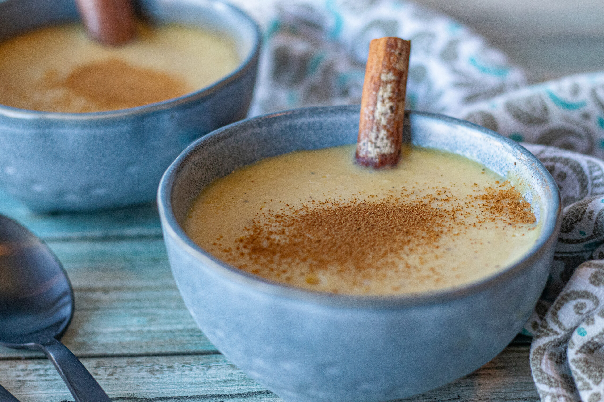
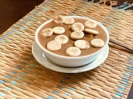
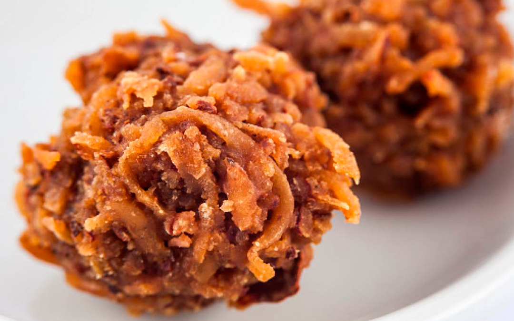
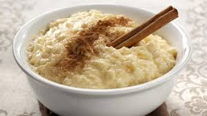

Majarete
A sweet corn pudding made with cinnamon and nutmeg, traditionally served chilled.
Habichuelas con Dulce
A sweet creamy dessert made from red beans, coconut milk, sweet potato, raisins, and spices.
Dulce de Coco
Grated coconut cooked with milk, sugar, and cinnamon to form a chewy, sweet treat.
Dulce de Leche
A thick caramel-like dessert made by slowly heating sweetened milk until rich and golden.

Arroz con Leche
Creamy rice pudding flavored with cinnamon and vanilla, a comforting and nostalgic dessert.
